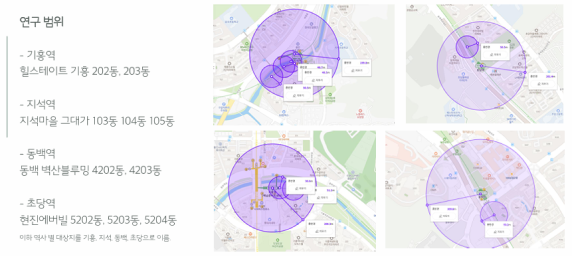
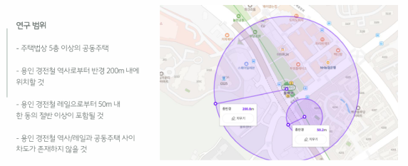
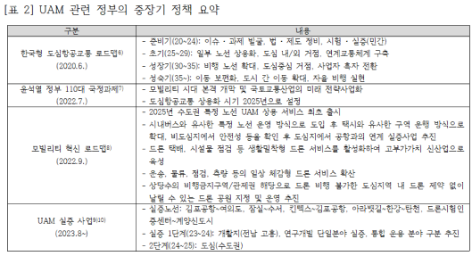

데이터를 기반으로 한 문제 정의 능력
지속가능한 발전을
위한 문제 해결 능력
지역 컨텐츠 발굴 및
강화 프로젝트 기획 능력


정예진 입니다.

직접 다양한 연구 대상 단지에 다양한 시간대에 방문 관찰 및 거주민과의 인터뷰를 통해 용인 경전철 인근거주의
편익과 비용 체감 정도를 파악했습니다.
조사 결과, 다른 문제에 비해 소음 문제를 더 체감했으며, 그 외 다른
비용을 포함해 교통비 절약이나 이동 편의성등의 편익 역시 체감하는 정도가 낮음을 확인할 수
있었습니다.
그러나 실제로 용인경전철은 소음진동 기준치 이하의 시설로 추가적인 방음 시설 설치 의무는
없었으며, 앞으로 지어질 단지 차원에서 자체적으로 소음 문제에 대한 대응이
요구됨을 확인할 수 있었습니다.
소음과 진동의 관리는 쾌적한 주거환경 조성에 있어 필수적인 요소입니다. 중량전철 건설 이후 시도된 경량전철 사례
중 하나인 용인 경전철의 인근 거주는
이동 편의성이라는 편익을 얻을 것으로 예상되는 동시에 경전철의
특성으로 인한 비용도 발생할 것으로 예상됩니다.
용인 경전철 인근 거주의 편익과 비용 체감; 소음 문제를 중심으로
용인시 경전철 인근 공동주택 거주의 편익과 비용의 체감을 파악하고, 앞으로 도시철도로써 경전철 도입 과정에서 개선점을 제안하는 프로젝트입니다.
 긍정적 요인만을 전제로 한 수요예측
운영적자, 부실공사 등을 이유로 준공확인 거부
자체 감리 및 안전검사에서 안전성 확인
소음민원에 대한 책임을 사업자에게 전가하려 준공확인을 지연
- 경량전철 중 가장 큰 차량폭의 고중량 차량으로 상하부 구조물이 계획보다
커져 도시경관 저해
- 철제 차륜으로 소음과 진동이 적다는 장점의 약화(시범운행 시
집단 민원)
대규모 택지개발, 행정타운 조성, 에버랜드와의 사업 공조 등 긍정적인 요인만을 전제로 통행 발생에 대한 다중회귀분석 및 최적전략통행 배정모형의 통행배정방법 사용
신교통수단인 도심항공모빌리티(UAM)의 성공적인 도입을 위하여 기존 계획을 검토하고 새로운 도입 단계 및 방향성을 제시하는 프로젝트입니다.
도심항공모빌리티 UAM 도입 방향 제시

자동화, 탈탄소화, 통합화, 공유화와 같은 모빌리티 대전환이 예상되는 시점에서 자율자동차에 이어
도심항공모빌리티(이하 UAM) 도입에 대한 관심이 높아지고 있습니다.
우리나라에서도 2020년부터 중장기
교통계획에 UAM을 포함하여 국정 과제로 추진하고 있으나 실제 교통수단 도입에 있어서 다양한 제약이 예상됩니다.
현실적 여건을 고려한 실제 수익 모델 및 비즈니스 전망 파악의 부족
교통수단 수요 데이터 및 측정 도구 부족
등
전국적인 차원의 조사 및 연구, 현실적인 모델 개발 등의 기술적 접근과 노력 요구
실시간 수요대응형 서비스 형태로 시행의 높은 가능성에 따른 정시성, 효율성의 문제
기술적인 차원의 연구와
많은 시범 비행 요구
동등한 위상의 기존 법률 사이의 대립
안전 및 소음 진동 기준과 사생활 침해 대책 미비 등
법률적
차원의 체계 정비와 실무적인 차원에서의 민관협력 요구
UAM 도입에 대한 인식을 대중교통 이용자를 대상으로 한 인터뷰로 파악하고,
이를 바탕으로 UAM 도입을 위해
필요한 추가 과제를 설정하여 더 구체적인 UAM 도입 로드맵을 제시했습니다.
운영에서의 수요 방향성 변경: 개인의 이동 -> 공익적 업무 수행
수도권 외 지역의 열악한 광역 단위의 대중교통 이용 편의성
기존의 인프라를 활용하여 비용 절감 및 고정
노선의 준다이나믹형 운행 과정에서의 데이터 수집의 가능성
운행 거리에서의 방향성 변경: 단거리 운영 -> 장거리 운영
기술의 세계적 경쟁력 측면에서 중장거리 운영을 목표로 연구 개발 및 시범운행의 필요성
적극적 배터리
기술 연구 및 투자유치 필요
운행 지역에서의 방향성 변경: 수도권, 도심 내 운영 -> 수도권 외 지역, 광역 운영
특수한 경우를 제외하고는 높은 이용 요금 형성에 따라 수요가 즐어드는 양상
기술적 수준 충족, 법률적
기반 마련, 사회적 인식 준비 없이는 수익 모델 개발의 현ㅅ리적 어려움
공익적 업무 수행에 우선하여
단계적 도입 및 확대: 의료 및 소방업무
한국 건설관리학회 실무 아카데미 수료
디지털 워크스페이스 & SNS 마케팅 분석 교육 수료
빅데이터 실무 2급
(한국정보인재개발원)
파이썬 프로그래밍 활용능력 2급
(한국정보인재개발원)


국내외 최초의 UBRC 사례(유당마을, 명지 엘펜하임, 그린힐스(ISU), 미라벨라(ASU))를 중심으로, 타 실버타운 모델 대비 UBRC 모델의 장단점을 파악하고 국내 새로운 실버타운 개발주체로의 대학을 검토
수원연무동의 스마트 도시재생을 포함한 도시재생사업의 계획과 현황을 알아보고, 스마트 도시재생 및 지속가능하며 성공적인 도시재생을 위한 필요조건을 확인
환경관리 문제에 있어 사익과 공익사이의 갈등을 조정하기 위한 정부 및 지자체의 노력을 도시공원 일몰제 사례를 통해 검토 이를 바탕으로 그린벨트 해제 이슈를 파악
신갈도시재생사업 사례연구에서 시작하여, 직접 주민역량강화 교육에 참여해 수료하는 과정을 통해 지역 도시재생의 개관 및 실태를 파악, 지역 주민이 주체가 되는 도시재생사업을 위한 구조적 한계 파악 및 앞으로의 방향 제시
용인경전철 역사와 레일 인근에 위치한 아파트 거주의 실태를 파악하고 이를 중재하기 위한 지자체의 노력과 앞으로의 방향을 제시
재산권 보호와 환경보전 사이의 갈등;
도시공원 일몰제와 그린벨트
용인경전철 인근지역의 편익과 비용의 체감; 소음 문제를 중심으로

© 2025 정예진. All rights reserved.